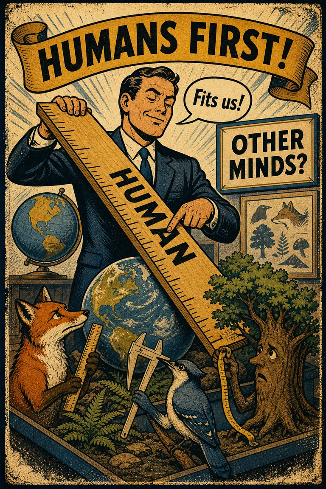
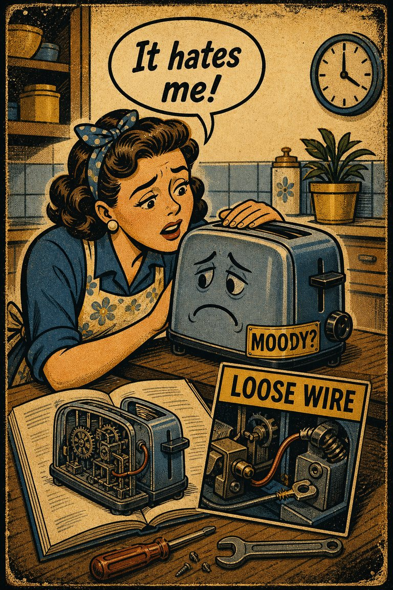
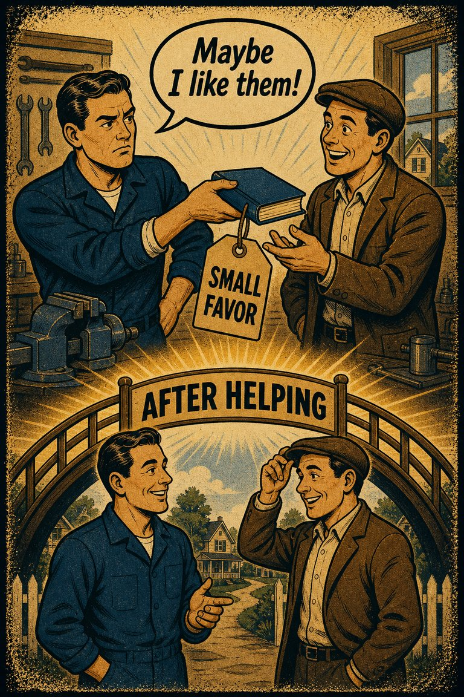

Everyday life
In everyday life, this often looks like people leaning on the easiest first interpretation when situations where opinion reporting is already difficult and the inertia cue feels easier to trust than a fuller review..

Cognitive Biases
A practical cognitive-bias site with clear definitions, learning paths, assessments, self-audits, and debiasing tools.
Cognitive Bias
The age-independent belief that one will change less in the future than one has in the past
What it distorts
Biases that distort what people say they believe, prefer, or remember believing.
Typical trigger
Situations where opinion reporting is already difficult and the inertia cue feels easier to trust than a fuller review.
First countermove
Start with the opinion reporting question instead of the first intuitive answer, then check whether the inertia pattern is doing invisible work.
Best use
Quick reference
How much of the reported opinion is direct access, and how much is post-hoc reconstruction or self-presentation?
In opinion reporting problems, beliefs, habits, or commitments resist updating even when better movement is available before a fuller check catches up.
Use the quick check and reflection questions before locking the label. Nearby entries often share the same outer appearance while differing in what actually drives the distortion.
Each example changes the surface context while keeping the same hidden distortion in place.
In everyday life, this often looks like people leaning on the easiest first interpretation when situations where opinion reporting is already difficult and the inertia cue feels easier to trust than a fuller review..
At work, this often appears when teams treat the first coherent story as sufficient instead of slowing the process long enough to compare alternatives.
In public discourse, it often surfaces when commentators move too quickly from salience to conclusion while the underlying evidence remains thinner than it sounds.
The distortion usually feels like ordinary good judgment from the inside, which is why procedural repairs matter more than mere recognition.
Teaching note: Start with the opinion Reporting problem, then show how the inertia pattern makes the distortion feel natural from the inside.
The strongest debiasing moves change the process, not just the label.
Start with the opinion reporting question instead of the first intuitive answer, then check whether the inertia pattern is doing invisible work.
Ask someone else to restate the case from a genuinely different starting point before committing.
Change the workflow so this distortion becomes harder to repeat by default next time.
Practice And Repair
Follow the moment where the bias first becomes attractive, then track how that attraction turns into a distorted judgment before jumping straight to the label.
Situations where opinion reporting is already difficult and the inertia cue feels easier to trust than a fuller review.
The first coherent reading starts to feel like ordinary good judgment from the inside.
Biases that distort what people say they believe, prefer, or remember believing.
Start with the opinion reporting question instead of the first intuitive answer, then check whether the inertia pattern is doing invisible work.
How much of the reported opinion is direct access, and how much is post-hoc reconstruction or self-presentation?
Spot It
Slow It
Reframe It
These are nearby labels that can share the same outer appearance while differing in what actually drives the distortion. Use the overlap, the distinction, and the diagnostic question together before settling the call.
Why compare it: A nearby label worth comparing before settling the diagnosis.
Why compare it: A nearby label worth comparing before settling the diagnosis.
Why compare it: A nearby label worth comparing before settling the diagnosis.
These are useful when the label seems roughly right but the process change still feels underspecified.
How much of the reported opinion is direct access, and how much is post-hoc reconstruction or self-presentation?
What is staying in place mainly because movement is costly, awkward, or identity-threatening?
What evidence or comparison would most seriously change the current call?
These sourced cases come from closely related biases and help show the same kind of pressure while a direct case for this page catches up.
Passive disease risk preferred to active side-effect risk
In health decisions, some people judge harms caused by a chosen intervention as morally worse than similar or greater harms caused by refusing the intervention.
Why it fits: The action pathway feels uniquely blameworthy even when it is not uniquely harmful.
Related through: Omission bias
Modern decision research
Vaccination and omission-bias scenarios
People often judge harms caused by intervention more harshly than comparable harms caused by abstaining, including in vaccine-related moral scenarios.
Why it fits: The active pathway feels more blameworthy even when the preserved omission path can be just as harmful.
Related through: Omission bias
Modern decision research
These neighbors were selected from shared categories, shared patterns, and explicit editorial links where available.

The tendency to react to disconfirming evidence by strengthening one's previous beliefs.

The tendency to judge harmful inaction as more acceptable, or less blameworthy, than equally harmful action.

The tendency to use human analogies as a basis for reasoning about other, less familiar, biological phenomena.

The tendency to treat animals, objects, or abstractions as if they had human thoughts, feelings, or intentions.

The tendency to do things because many other people do the same.

The tendency to like or help someone more after already doing that person a favor.